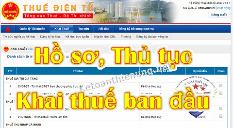

Doanh nghiệp mới thành lập cần làm những gì? Hồ sơ khai thuế ban đầu 2021, thủ tục đăng ký thuế ban đầu như nào? Kế toán Diệu Tâm xin hướng dẫn thủ tục khai thuế ban đầu cho Công ty mới thành lập.
Chú ý: Việc khai thuế ban đầu gồm nhiều bước, nhiều giai đoạn và làm việc với nhiều cơ quan ... Nên không thể làm xong trong 1, 2 hoặc 3 ngày. -> Mã theo từng giai đoạn làm xong phần này làm tiếp phần sau.
Bước 1: Mở Tài khoản ngân hàng + Mua Chữ ký số:
- Khi nhận được Giấy phép đăng ký kinh doanh -> Tức là có MST DN rồi, các bạn đi đăng ký ngay 1 Tài khoản ngân hàng + Mua chữ ký số (Token).
Giải thích: Hiện tại hầu như tất cả các Chi cục thuế đều nhận hồ sơ khai thuế điện tử và Tiền thuế điện tử -> Nếu muốn nộp được thì DN phải chữ ký số (để kê khai qua mạng) + Tài khoản ngân hàng (để nộp tiền thuế điện tử)
-> Thủ tục mở TK ngân hàng như nào, các bạn liên hệ trực tiếp với Ngân hàng mà DN các bạn muốn mở để làm việc nhé.
-> Mua Chữ ký số (Có rất nhiều hãng, đủ mọi các loại giá khác nhau) ... Các bạn nên chọn những bên uy tín như: Viettel, VNPT, FPT, BKAV ...(nói chung là những hãng lớn, tuy chi phí nhiều hơn nhưng các vấn đề về kỹ thuật, hỗ trợ sẽ đảm bảo hơn)
Chú ý:
- Từ ngày 1/5/2021 thì khi DN mới mở Tài khoản ngân hàng thì KHÔNG cần phải đăng ký với Sở kế hoạch đầu tư như trước đây nữa nhé.
--> Chi tiết: Bỏ quy định đăng ký TKNH với sở kế hoạch đầu tư.
---------------------------------------------------------
- Sau khi đã có Chữ ký số + TK Ngân hàng -> Các bạn kê khai thuế môn bài + Nộp tiền thuế môn bài (Hạn chậm nhất là ngày 30/1 năm sau năm thành lập), chậm nộp là bị phạt.
Ví dụ: DN bạn thành lập ngày 12/6/2021 thì hạn nộp Tờ khai + Tiền thuế môn bài là ngày 30/1/2022.
-> Các bạn có thể kê khai trên phần mềm HTKK rồi kết xuất XML để nộp qua mạng hoặc Kê khai trực truyến trên trang thuedientu.
- Sau khi đã nộp Tờ khai thuế môn bài thành công -> Thì các bạn phải nộp Tiền thuế môn bài nhé (Ko nộp phạt chậm nộp đó nhé)
Chú ý: Muốn nộp được tiền điện tử thì các bạn phải đăng ký nộp tiền thuế điện tử (Tức là sau khi đã mở xong TKNH thì phải đăng ký Tài khoản ngân hàng trên trang thuedientu).
Chi tiết xem tại đây: Cách đăng ký nộp tiền thuế điện tử
Lưu ý: Nếu các bạn muốn nộp tiền thuế môn bài trực tiếp, hoặc nộp qua kho bạc hoặc nộp qua địa điểm giao dịch ngân sách nhà nước ... -> Các bạn liên hệ trước với Cơ quan thuế quản lý DN m xem họ nhận theo hình thức nào nhé.
---------------------------------------------------------------------------------------
- Có 2 phương pháp kê khai thuế GTGT là khấu trừ và Trực tiếp.
- Có 2 kỳ kê khai là theo tháng và theo quý (Những DN mới thành lập kê khai theo Qúy)
- Hạn nộp Tờ khai thuế GTGT theo quý là ngày cuối cùng của tháng đầu của quý tiếp theo.
Ví dụ: DN bạn thành lập ngày 12/6/2021 (tức là quý 2/2021) => Thì hạn nộp Tờ khai thuế GTGT quý 2/2021 chậm nhất là ngày 31/7/2021
Tiếp đó: Bạn phải xác định được DN lựa chọn kê khai thuế GTGT theo pp nào -> Thì tiếp đó mới lựa chọn được loại hóa đơn sử dụng.
Ví dụ:
- Bạn lựa chọn DN kê khai thuế GTGT theo pp khấu trừ thì sẽ sử dụng hóa đơn GTGT (Hiện tại sử dụng hóa đơn điện tử).
-> Các bạn liên hệ với bên cung cấp hóa đơn điện tử (Cũng giống như phần Chữ ký số), các bạn nên chọn những bên uy tín như: Viettel, VNPT, FPT, BKAV, Misa ...Tuy chi phí cao hơn nhưng hỗ trợ và đảm bảo an toàn
-> Sau khi đã có hóa đơn điện tử nhớ là phải làm thủ thông báo phát hành hóa đơn trước khi sử dụng nhé (Sử dụng mà chưa thông báo phát hành là bị phạt nhé)
- Nếu DN bạn kê khai thuế GTGT theo pp trực tiếp thì sử dụng hóa đơn bán hàng -> Hóa đơn bán hàng (Hiện tại có 2 cách là: Các bạn lên Chi cục thuế quản lý ND để làm thủ mua hóa đơn hoặc làm thủ tục phát hành hoá đơn điện tử).
-> Về thuế Thu nhập cá nhân, chi tiết xem tại đây: Hướng dẫn cách kê khai thuế TNCN
-> Về thuế TNDN thì ko cần phải nộp Tờ khai, các bạn căn cứ vào tình hình kết quả hoạt động sản xuất kinh doanh để tự tạm tính rồi đi nộp tiền thuế TNDN (nếu có lãi)
------------------------------------------------------------------------
Bước 4: Lựa chọn hình thức kế toán + Khấu hao TSCĐ:
Ví dụ: DN vừa và nhỏ có thể sử dụng chế độ kế toán theo Thông tư 133 hoặc 200 (Thường sẽ chọn 133), DN lớn chỉ được áp dụng chế độ kế toán theo Thông tư 200
- Trường hợp bạn muốn thay đổi: VD như DN vừa và nhỏ có thể áp dụng chế độ kế toán theo Thông tư 200 nhưng phải thông báo cho cơ quan thuế và thực hiện nhất quán trong năm tài chính.
- Đăng ký phương pháp trích khấu hao TSCĐ (nếu DN bạn có TSCĐ):
Theo quy định tại Thông tư 45/2013/TT-BTC:
“Doanh nghiệp tự quyết định phương pháp trích khấu hao, thời gian trích khấu hao TSCĐ theo quy định tại Thông tư này và thông báo với cơ quan thuế trực tiếp quản lý trước khi bắt đầu thực hiện.”
Nghĩa là: Trước khi bắt đầu thực hiện trích khấu hao TSCĐ thì DN phải thông báo cho cơ quan thuế
-------------------------------------------------------------------------
Trên đây là tóm tắt sơ lược 1 số hồ sơ, thủ tục khai thuế ban đầu cho Doanh nghiệp mới thành lập.
-> Ngoài ra sau đó còn rất nhiều việc khác phải làm và các cơ quan khác như: Cơ quan BHXH, Phòng lao động TBXH, Liên đoàn lao động Quận/Huyện ...
-----------------------------------------------------------------------------------------------------
Các bạn muốn tìm hiểu chuyên sâu hơn về thuế TNCN, TNDN... Kỹ năng quyết toán thuế thì có thể có tham gia: Khóa học kế toán thuế thực tế chuyên sâu.
